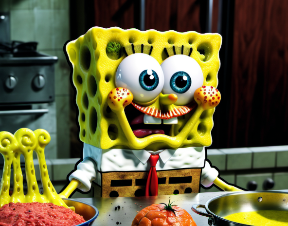

Spongebob is having a busy day at the Krusty Crab. It's your job to help him serve all the correct orders.
On the left orders will come through every 5 seconds and you need to serve the corresponding orders.
To place burgers hold the Shift key, and move the burger using the Arrow Keys, then press the Spacebar to place the burgers.
Every 6 seconds they will change colour corresponding to how cooked the burgers are.
Red = Raw
Blue = Medium Rare
Green = Medium
Yellow = Medium Well
Brown = Well done
Black = Burnt
To serve the burger hold the CTRL key, and move the spatula using the Arrow Keys onto the burger until it is highlighted, and then press th Spacebar to serve.
If you serve a burger that has been ordered, 5 seconds will be added to your time and 10 points will be added to your score
Be careful because if you serve a raw or burnt burger, or a burger that is not ordered you will have 2 seconds deducted from your time and you will lose 10 points.
If the timer runs out or there are 20 orders waiting to be served, Spongebob will be fired.
Press Enter to begin & press R to restart.
